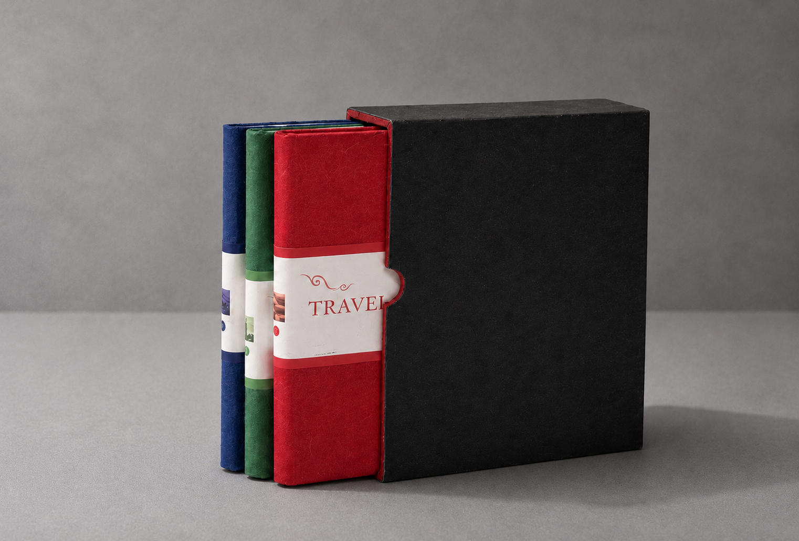
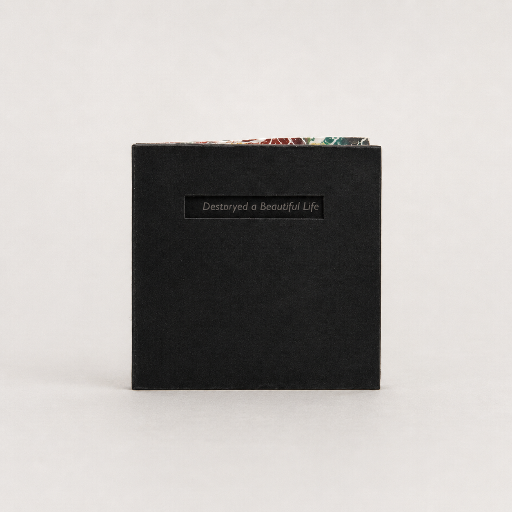
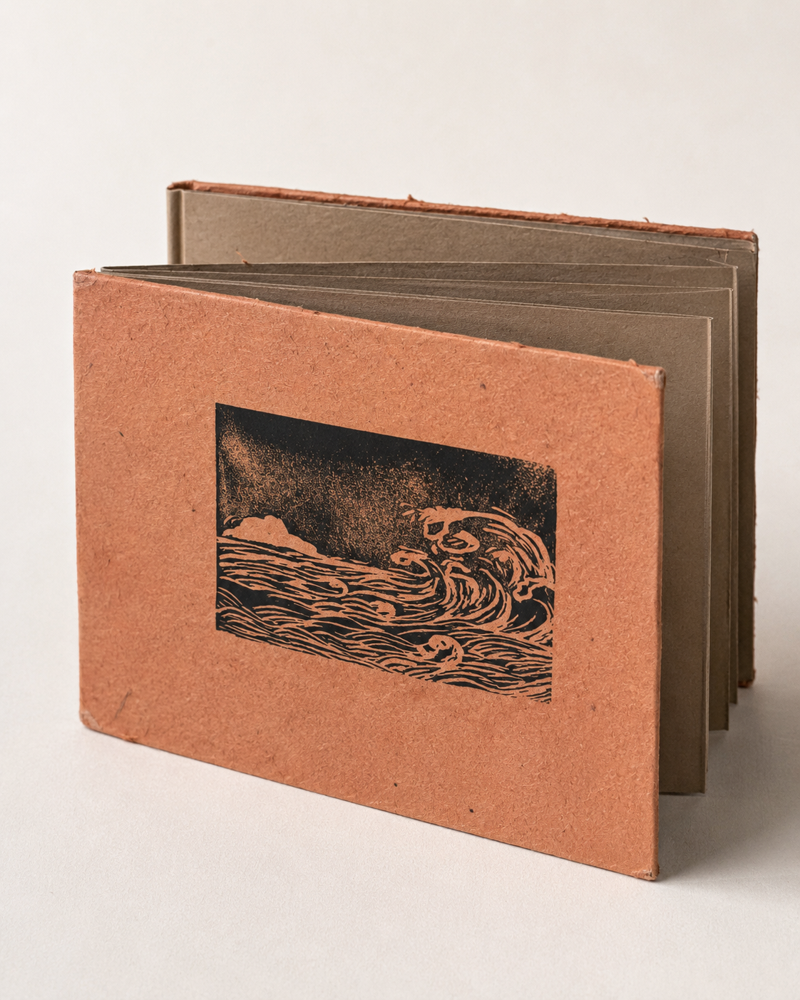
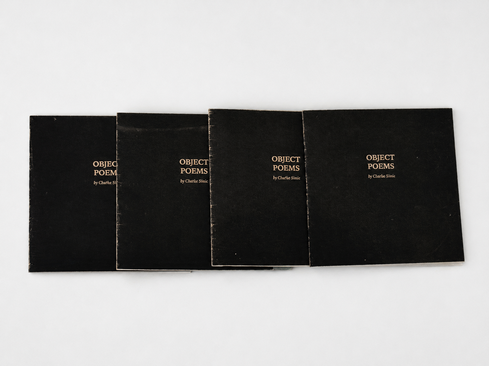
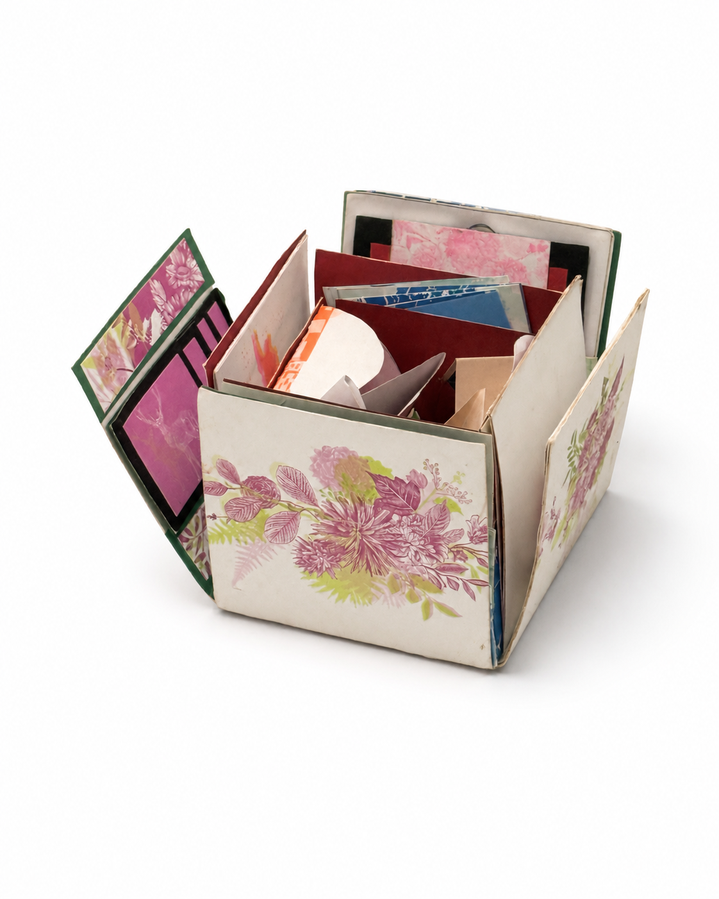

01 / Core Work
Early Printed Matter / Artist Book Works
A compact archive of early studies in printed matter, book structure, and the relationship between text, image, and sequential reading.
Archive Note
These early works are shown as a reduced archive rather than as fully developed projects. They indicate a continuing interest in books as material structures for reading, touch, sequence, and image-based thinking.
Travel Journal Series
A series of handmade travel journals combining printed matter, illustration, photography, and layered page materials.

Destroyed a Beautiful Life
A miniature artist book combining printmaking, poetry, and sequential storytelling through the life cycle of a butterfly.

Folded Poem Study
An early printed matter study exploring poetry as a continuous reading structure through folding, hand printing, and wave-like image sequences.

Object Poems
A poem-based card object using translucent paper to turn reading into a small layered structure of opening and handling.

Risograph Box
A hand-assembled box object that opens into layered paper mechanisms, printed fragments, and interactive interior elements.
